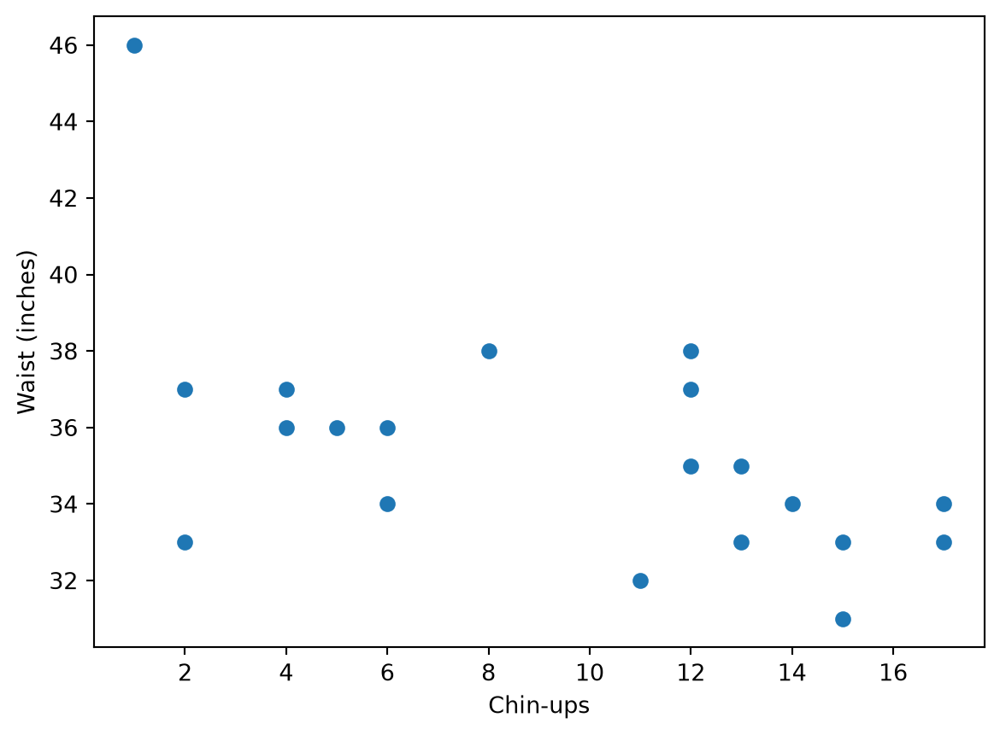
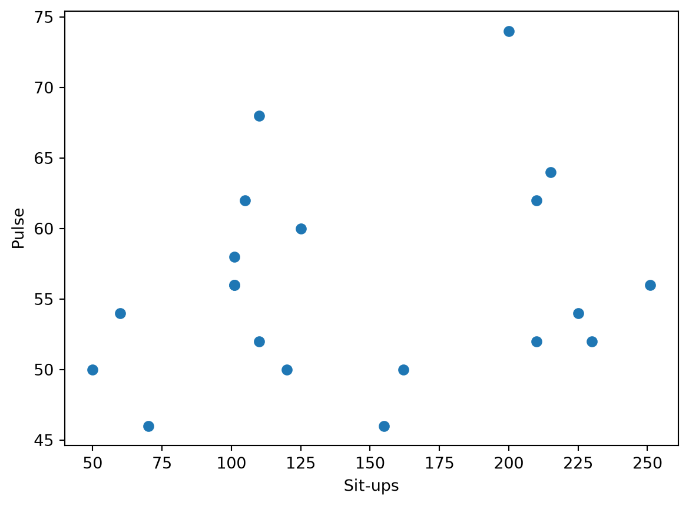

import pandas as pd
import matplotlib.pyplot as plt
from sklearn.datasets import load_linnerudDoes exercise actually relate to fitness?
Introduction
For this post I wanted to try a small sports/fitness dataset in Python. I picked one that’s built right into scikit-learn called linnerud. It has data from 20 middle-aged men who did 3 exercises (chin-ups, sit-ups, and jumps) and also had 3 physical measurements taken (weight, waist, and pulse). I wanted to see if doing more of these exercises is actually related to having a lower weight, smaller waist, or lower pulse.
Source: linnerud dataset, built into scikit-learn.
Loading the data
The dataset comes split into two parts: the exercise numbers and the physical measurements. I put them together into one table so it’s easier to work with.
linnerud = load_linnerud()
exercise = pd.DataFrame(linnerud.data, columns=linnerud.feature_names)
physio = pd.DataFrame(linnerud.target, columns=linnerud.target_names)
data = pd.concat([exercise, physio], axis=1)
data.head()| Chins | Situps | Jumps | Weight | Waist | Pulse | |
|---|---|---|---|---|---|---|
| 0 | 5.0 | 162.0 | 60.0 | 191.0 | 36.0 | 50.0 |
| 1 | 2.0 | 110.0 | 60.0 | 189.0 | 37.0 | 52.0 |
| 2 | 12.0 | 101.0 | 101.0 | 193.0 | 38.0 | 58.0 |
| 3 | 12.0 | 105.0 | 37.0 | 162.0 | 35.0 | 62.0 |
| 4 | 13.0 | 155.0 | 58.0 | 189.0 | 35.0 | 46.0 |
There are only 20 people in this dataset, which is pretty small, but it’s enough to try some basic comparisons.
data.describe().round(1)| Chins | Situps | Jumps | Weight | Waist | Pulse | |
|---|---|---|---|---|---|---|
| count | 20.0 | 20.0 | 20.0 | 20.0 | 20.0 | 20.0 |
| mean | 9.4 | 145.6 | 70.3 | 178.6 | 35.4 | 56.1 |
| std | 5.3 | 62.6 | 51.3 | 24.7 | 3.2 | 7.2 |
| min | 1.0 | 50.0 | 25.0 | 138.0 | 31.0 | 46.0 |
| 25% | 4.8 | 101.0 | 39.5 | 160.8 | 33.0 | 51.5 |
| 50% | 11.5 | 122.5 | 54.0 | 176.0 | 35.0 | 55.0 |
| 75% | 13.2 | 210.0 | 85.2 | 191.5 | 37.0 | 60.5 |
| max | 17.0 | 251.0 | 250.0 | 247.0 | 46.0 | 74.0 |
Looking at the averages, people did about 9-10 chin-ups, 145 sit-ups, and 70 jumps on average, and had an average waist size of about 35 inches and pulse of about 56.
Chin-ups vs waist size
My first guess was that people who can do more chin-ups probably have a smaller waist. I made a scatter plot to check this.
plt.scatter(data["Chins"], data["Waist"])
plt.xlabel("Chin-ups")
plt.ylabel("Waist (inches)")
plt.show()
There does seem to be a slight downward pattern here, so people who could do more chin-ups tended to have a somewhat smaller waist, but it’s not a super strong relationship and there are some exceptions.
Sit-ups vs pulse
Next I checked if people who did more sit-ups had a lower resting pulse.
plt.scatter(data["Situps"], data["Pulse"])
plt.xlabel("Sit-ups")
plt.ylabel("Pulse")
plt.show()
This one doesn’t look like it has much of a pattern at all. The points are pretty scattered, so based on this small dataset, sit-ups don’t seem to be clearly related to pulse.
Conclusion
Using the linnerud dataset, I found a moderate relationship between chin-ups and waist size, but almost no relationship between sit-ups and pulse. This dataset is very small (only 20 people), so I wouldn’t take these results too seriously, but it was a good first try at loading a built-in dataset and making some plots in Python.